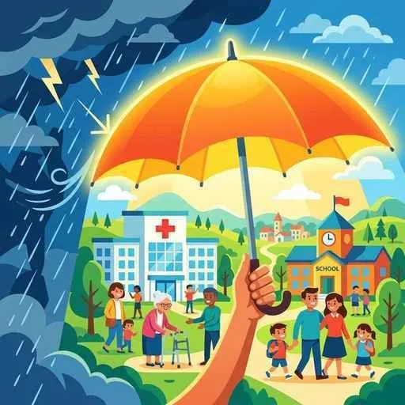

14. 社会保障と社会福祉
私たちが病気やケガをしたり、年をとって働けなくなったり、あるいは不測の事態で生活に困ってしまったりしたとき、国が助けてくれる公的な仕組みがあります。これが「社会保障制度」です。これは憲法第25条の生存権（健康で文化的な最低限度の生活）を実際に守るための盾となっています。今回は、社会保障を構成する４つの大黒柱と、少子高齢化の中で制度を守るための課題を整理します！
1. 社会保障制度の「４つの柱」
日本の社会保障制度は、目的や役割に応じて大きく４つのグループに分かれています。それぞれの言葉の意味と具体例を正しく一致させることがテストでの最大のポイントです。
① 社会保険（しゃかいほけん）─最も規模が大きい！
国民があらかじめ保険料を出し合い、病気、ケガ、失業、老後の際にお金やサービスを受け取る仕組み。強制加入が原則です。
・（例）医療（健康）保険、年金保険、雇用保険（失業時に給付）、労災保険、および満40歳以上の全員が保険料を払って介護が必要な人を支える介護保険など。
② 公的扶助（こうてきふじょ）
生活が非常に苦しく、自力で生活できない人に対して、保険料ではなく税金を財源にして、国が最低限度の生活を保障し自立を助ける仕組み。
・（例）生活保護（せいかつほご）。
③ 社会福祉（しゃかいふくし）
高齢者、障害者、児童など、社会的な支援を必要とする人々が安心して暮らせるよう、施設やサービスを提供する仕組み。
・（例）児童相談所、特別養護老人ホーム、障害者福祉サービスなど。
④ 公衆衛生（こうしゅうえいせい）
病気を未然に防ぎ、国民全員が健康で衛生的な生活環境で暮らせるように予防・整備する活動。
・（例）感染症の予防（予防接種や検疫）、上下水道の整備、公害対策など。

図1：社会保険、公的扶助、社会福祉、公衆衛生が合わさって国民の安全網（セーフティネット）を構成しています
2. 少子高齢化（しょうしこうれいか）による社会保障の危機
日本の社会保障制度は、現役世代（働く世代）が払う保険料や税金で、主に高齢者の医療費や年金を支える「世代間扶養（せだいかんふよう）」を基本としています。
しかし、少子高齢化がハイスピードで進む中で、以下の問題が深刻化しています。
- 支え手（現役世代：15〜64歳）の減少 ➔ 保険料の収入が減る。
- 支えられる側（高齢者：65歳以上）の増加 ➔ 年金や医療費の支払い（給付）が急増する。
この結果、現役世代の保険料や税金の負担が毎年重くなり、足りない分は国の借金（国債発行）でまかなっているため、制度の持続可能性が危ぶまれています。
3. これからの社会保障制度改革
将来にわたってこのセーフティネットを維持するため、様々な改革や議論が進められています。
- 年金支給開始年齢の引き上げ：受給スタートを60歳から65歳に引き上げました（今後さらなる引き上げも議論されています）。
- 自己負担割合の見直し：医療費の窓口負担について、高齢者であっても現役並みの所得がある場合は負担割合を増やす。
- 消費税の活用：景気に左右されにくく、全員から集められる消費税を全額、社会保障費（年金、医療、介護、少子化対策）の財源として充てる改革が行われています。
🔥 この単元のテスト対策・暗記 of コツ
-
★
社会保障の「４つの柱」の仕分け（超頻出）：
・記述・選択問題でのポイント：「生活保護 ＝ 公的扶助」「年金・医療・介護 ＝ 社会保険」「予防接種・上下水道 ＝ 公衆衛生」「特別養護老人ホーム ＝ 社会福祉」。この具体例と名称の仕分けは完璧にしてください！ -
★
介護保険の加入年齢（数字問題）：
・介護保険への加入義務は「満40歳以上」です。この年齢の数字は非常によく狙われます。 -
★
少子高齢化が与える影響の記述対策：
・記述：「少子高齢化が進むと、社会保障制度の運営にどのような問題が生じるか、説明しなさい。」
・解答：「保険料を支払う現役世代の負担が増大する一方で、医療や年金を受給する高齢者が増加するため、社会保障の財政が急速に悪化する。」